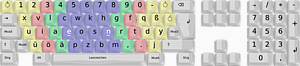

Neo
Dieser Artikel wurde für die folgenden Ubuntu-Versionen getestet:
Dieser Artikel ist größtenteils für alle Ubuntu-Versionen gültig.
Zum Verständnis dieses Artikels sind folgende Seiten hilfreich:
Das Neo-Tastaturlayout wurde entworfen, um das Tippen angenehmer und schneller zu machen. Um dies zu erreichen, werden häufig benutzte Tasten auf Finger gelegt, welche gut erreicht werden können.
Die deutsche Neo-Variante ist in jeder Ubuntu-Version bereits enthalten. Dieser Artikel beschreibt deshalb die Aktivierung und Verwendung des ergonomischen Tastaturlayouts Neo beziehungsweise dessen Nachfolgers Neo2.
Einrichtung¶
Kurzfristiger Wechsel¶
|  |
| Zeigt die Tastenbelegung von Neo 2 |
Die folgende Methode eignet sich, wenn man an einem fremden Rechner zum Neo-Layout wechseln möchte.
Der Wechsel zu Neo erfolgt durch den Befehl [1]:
setxkbmap de neo -option
Nach einer Neuanmeldung ist die ursprüngliche Belegung wieder aktiviert. Alternativ kann man auch mit folgendem Befehl zurück zum QWERTZ-Layout wechseln:
setxkbmap de
Dauerhafte Einrichtung¶
Möchte man Neo standardmäßig aktivieren bzw. über Symbol im Tray-Bereich schnell wechseln können, so sind folgende Schritte notwendig:
Zunächst muss das Neo-Tastaturlayout hinzugefügt werden. Das Tastatur-Menü findet man unter "System -> Einstellungen -> Tastatur". Dort findet man unter dem Reiter "Belegungen" den "Hinzufügen"-Button. Im Menü, was sich daraufhin öffnet, wechselt man unter "Land" auf "Deutschland" und bei "Varianten" auf "Deutschland Neo 2". Man hat nun noch die Möglichkeit, über Drucken das Bild des Tastaturlayouts auszudrucken oder die Auswahl über Hinzufügen zu bestätigen.
Daraufhin sollte im Traybereich ein neues Symbol erscheinen. Über dieses Symbol ist das Umschalten zwischen den Tastaturlayouts möglich. Wenn mehrere Layouts der gleichen Sprache vorhanden sind, verrät ein kurzes Verharren des Mauszeigers über dem Symbol das aktuelle Layout. Ein  Linksklick schaltet die Tastaturbelegungen durch.
Linksklick schaltet die Tastaturbelegungen durch.
Neo üben¶
Um das Zehnfingersystem für das Neo2-Layout zu erlernen, ist ein Schreibtrainer nützlich. KTouch besitzt bereits angepasste Lektionen. Zunächst muss auch hier das Layout in KTouch umgestellt werden. Dies findet man im Menü unter: "Settings -> Keyboard Layouts -> German Neo 2". Als weiterer Schritt muss noch eine Lektion ausgewählt werden, die das Erlernen möglichst einfach gestaltet. Eine solche ist "German (Neo 2 keyboard layout)" welche man im Menü unter "Training -> Default Lectures" anwählen kann.
Alternativ kann auch TIPP10 verwendet werden, ein weiterer Schreibtrainer, der ebenfalls an Neo angepasst werden kann. Tipp10 passt sein Lernprogramm dynamisch an Fehler an, so dass Schwächen häufiger geübt werden.
Probleme¶
In Ubuntu Natty Narwhal 11.4 ist eine Version von Neo installiert, bei der das Selektieren auf Ebene 4, also das gleichzeitige Drücken von Shift und Mod4 nicht richtig funktioniert. Der Fehler kann durch ein Update auf die aktuellste Version behoben werden.
Achtung!
Vor dem Installieren der neuen Version empfiehlt es sich, eine Sicherungskopie des xkb-Verzeichnisses anzulegen.
Eine sehr gute Anleitung zum Sichern und Updaten findet sich im Neo-Wiki  .
.
 - PDF-Datei
- PDF-Datei- Erstellt mit Inyoka
-
 2004 – 2017 ubuntuusers.de • Einige Rechte vorbehalten
2004 – 2017 ubuntuusers.de • Einige Rechte vorbehalten
Lizenz • Kontakt • Datenschutz • Impressum • Serverstatus -
Serverhousing gespendet von